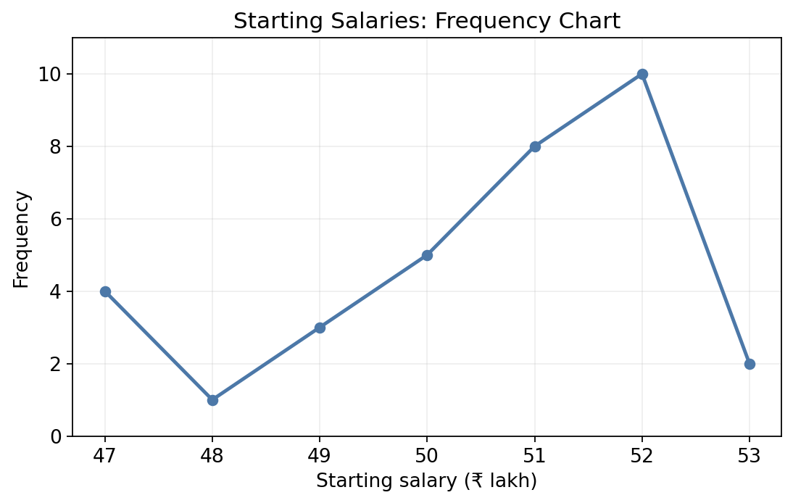
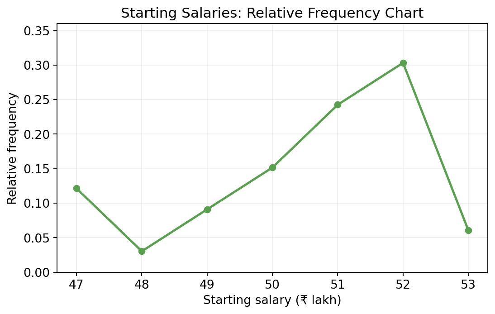
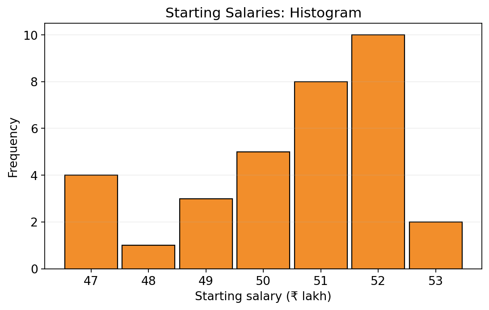
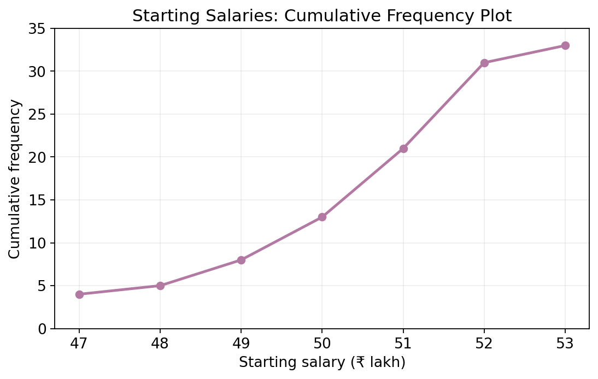
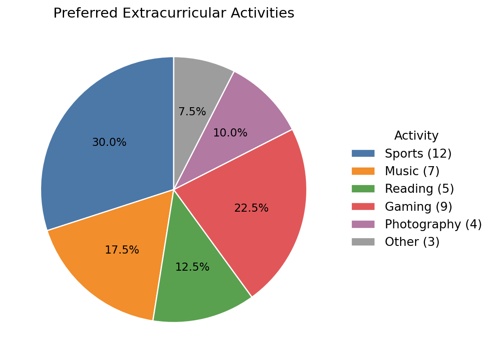

Lecture 3: Descriptive Statistics I
In continuation from last class, let us recall some more basic definitions from probability theory.
Last time, we recalled the modern definition of probability: it is a function that assigns to each random event a real number between \(0\) and \(1\) in a “reasonable” manner. Next, if \(B\) is an event such that \(p(B) > 0\), then we can ask for conditional probability that an event \(A\) occurs given that \(B\) has occurred. This is denoted \(p(A | B)\), and is defined as \(p(A \cap B) / p(B)\). law of total probability expresses the probability of an event \(A\) in terms of the conditional probabilities with respect to an event \(B\) such that \(0 < p(B) < 1\), as follows: \(p(A)=p(A | B) p(B) + p(A | B^c) p(B^c)\). Two events \(A\) and \(B\) are said to be independent if, informally speaking, the occurrence of one does not depend on the occurrence of the other; mathematically, this means that \(p(A | B) = p(A)\) and \(p(B | A) = p(B)\). However, this form requires that \(p(A) > 0\) and \(p(B) > 0\), so a cleaner formulation is to say that \(A\) and \(B\) are independent if \(p(A \cap B) = p(A) p(B)\) (simply apply the definition of conditional probability to see where this expression comes from).
Visualizing data sets
Okay, time to move on to statistics. Recall that statistics is the study of data, or observations. The very first task, when working with a data set, is to visualize it in a useful manner. For example, say we are given the following data set of salary packages (rounded to the nearest thousands) of ITEP BSc–BEd graduates from IIT Jodhpur along with the number of students at each salary level:
| Starting Salary | 47 | 48 | 49 | 50 | 51 | 52 | 53 |
|---|---|---|---|---|---|---|---|
| Frequency | 4 | 1 | 3 | 5 | 8 | 10 | 2 |
One way to visualize this data set is by plotting a frequency chart as follows:

You can observe this chart and, at a glance, note any trends in the data set. Sometimes, one would like to plot a relative frequency chart, where the \(y\)-axis is appropriately scaled: we divide each frequency by the total number of data points, \(4+1+3+5+8+10+2 = 33\). This could be useful if you want to compare trends with, say the starting salary data of BTech graduates of IIT Jodhpur: since the BTech cohort is much larger than the BSc–BEd cohort, comparing absolute values on the same chart would probably not be very useful.

It is also possible that the data set is not given to you in neatly arranged buckets. That is, perhaps your data includes precise salary packages of the graduates, rather than salary packages rounded to the nearest thousands. In this case, one could plot every single data point individually, but such a plot would probably be very noisy, and not particularly informative. It would be better to arrange the buckets appropriately ourselves, in which case we get a bar chart or a histogram as follows:

A natural question would be: how does one choose the bucket size in order to plot the histogram? As is often the case, the answer here is: it depends. Choose too small a bucket size, and the plot will be too noisy. Choose a large bucket size, and you miss any trends in the data. An appropriate bin size is determined by the needs of the problem, and informed also by experience and testing.
Another sort of plot is a cumulative frequency plot, also called an ogive. For instance, one might be interested in how many students receive a salary package of at most some amount. In such a case, a cumulative frequency plot is the way to go, as shown below:

A popular type of chart, though perhaps overused in place of better ones, is the pie chart. A pie chart divides a disc into sectors whose areas (equivalently, internal angles) are proportional to the relative frequencies. It makes sense to use a pie chart when you do not have a natural ordering on your data types, or you do not wish to imply an ordering. For example:

Lastly, we shall mention an interesting method of displaying tabular data, called a stem-and-leaf plot. Here, you divide your data points into a “stem” and a “leaf” part as follows: the stem is the most significant digit, or a particular place value that is most significant, and the leaf is the rest. For example, the data point \(634\) is split as \(6\) \(34\), where the stem is \(6\) and \(34\) is the leaf. By arranging the data points in this manner, the stem-and-leaf plot allows one to quickly spot trends based on the most significant part of the data values. For example:
| Stem | Leaves |
|---|---|
| 3 | 1 4 6 8 |
| 4 | 2 2 4 5 7 7 9 |
| 5 | 1 3 3 5 5 7 7 9 |
| 6 | 1 3 3 5 5 7 9 |
| 7 | 2 4 6 8 |
| 8 | 1 4 7 |
| 9 | 2 |
Key: \(5 \mid 7\) represents a score of \(57\).
Some common statistics
The term “statistics” in the title of this section refers to any function on a data set. This is different from the use of the word “statistics” as a branch of mathematics. (The etymology of the word “statistics” is interesting in its own right: read Chapter 1 of the course textbook to learn more!) We use statistics to understand the data better, and to estimate the “true” parameters of the population from which the sample data has been collected.
The first question that one would be interested in asking is, ‘Where is the data centered?’ There are several possible answers to this question. The first is called the sample mean: given data points \(x_1,x_2,\dotsc,x_n\), the sample mean is defined as \(\bar{x} = (x_1 + x_2 + \dotsb + x_n) / n\). Note that the sample mean weights each data point equally, namely by \(1/n\) if there are \(n\) points. Another measure of the center is the sample median: arrange the data set in increasing order, as \(x_{(1)} \leq x_{(2)} \leq \dotsb \leq x_{(n)}\). If \(n\) is odd, then the sample median is the middle term, and if \(n\) is even, then it is the mean of the two middle terms.
Note that the sample mean is more sensitive to outliers, as compared to the sample median. For instance, suppose we have in hand the major exam scores of this class, and it turns out that one student has done outstandingly well — 90 marks out of 100 — whereas the rest of the class has scores between 30 and 60 only. Should one use the mean or the median to determine where to place the middle grade in the course? Suppose it later turned out that one question was graded incorrectly for a majority of the students, so all their marks get bumped up by another 10 points. What changes do you expect to see in the mean and the median? What if it turns out that the top-scoring student was caught using unfair means, and so their score was reduced to 50 marks? How would the mean and the median change?
Next time, we shall continue the discussion by looking at another measure of the center, called the sample mode, and then discuss a measure of the spread in the data, called the sample variance.